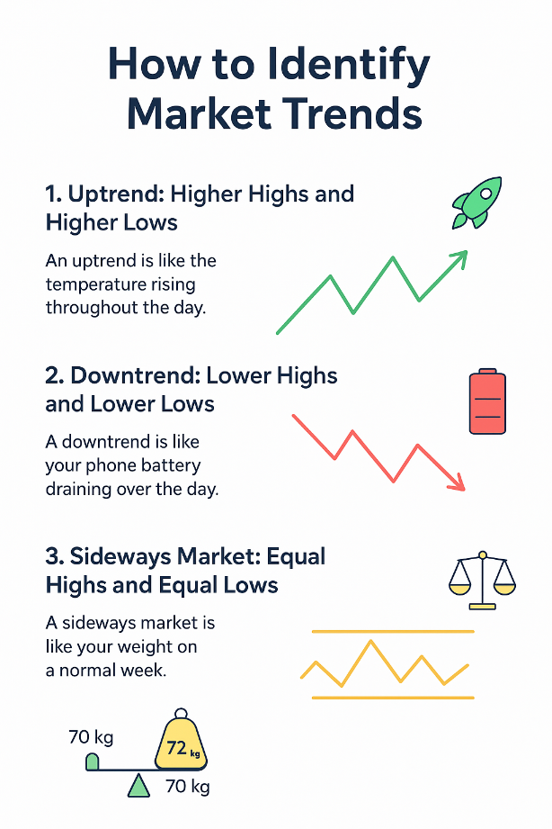

Level 2: Technical Analysis Mastery Intermediate
Stop guessing and start decoding the market's language. Master the art of chart reading to find high-probability trades.
This course turns complex charts into clear opportunities, focusing on price action, key indicators (RSI/MACD), and proven chart patterns for effective short-term and swing trading.
View Complete SyllabusWhat You Will Master in This Intermediate Course
Core Chart Skills
- Expertly reading Candlestick Charts and their signals.
- Identifying and trading using Support & Resistance (The Market's Floor/Ceiling).
- Drawing and using Trendlines and Channels to predict direction.
Essential Indicators
- Mastering the RSI (Relative Strength Index) for overbought/oversold signals.
- Using the MACD for momentum and trend confirmation.
- Understanding Volume and Volatility as the 'fuel' and 'speed' of a move.
Strategy & Discipline
- Implementing Multi-Timeframe Analysis for trade confirmation.
- Recognizing major Reversal Patterns (Head & Shoulders, Double Top/Bottom).
- The vital role of Risk Management, Stop-Loss, and Trading Journals.
Complete Technical Analysis Syllabus
-
1. The Core Philosophy: What is Technical Analysis?
Technical analysis is a powerful trading method that focuses on price charts, patterns, and volume. Instead of judging a company's worth (Fundamental Analysis), we focus on the collective psychology of all market participants reflected in the price action.

The Three Pillars of Technical Analysis
- Market Action Discounts Everything: All fundamental news, economic factors, and company reports are already baked into the price.
- Prices Move in Trends: Price movements are not random; they follow patterns and trends that can be identified.
- History Tends to Repeat Itself: Human psychology (fear and greed) drives patterns that repeat over time.
-
2. Candlestick Charts: The Trader's Language
Candlesticks are the most popular way to visualize price. Each candle tells a detailed story about the open, high, low, and closing price for a specific period, allowing you to instantly gauge market sentiment.

Decoding a Candlestick
- Green/White Body (Bullish)
- The closing price was higher than the opening price. Buyers were in control.
- Red/Black Body (Bearish)
- The closing price was lower than the opening price. Sellers were in control.
- Wicks (Shadows)
- The thin lines above and below the body showing the highest and lowest price reached during that period.
-
3. Support & Resistance: The Market's Psychological Zones
These are the critical price levels that attract heavy buying (Support/Floor) or selling (Resistance/Ceiling). They are the most fundamental concept in technical analysis.
üí° Relatable Analogy: Imagine a rubber ball in a room. The floor is the Support‚Äîit stops the ball from falling. The ceiling is the Resistance‚Äîit stops the ball from rising.
- Support: Price level where buying interest is strong enough to overcome selling pressure.
- Resistance: Price level where selling interest is strong enough to overcome buying pressure.
- Role Reversal: When a strong resistance level is broken, it often becomes the new support level (and vice versa).
-
4. Trend Analysis: Identifying the Market's Direction
Before you trade, you must know the direction of the market's momentum. The market moves in one of three states: up, down, or sideways. Knowing this dictates your strategy.
How to Define a Trend
- üöÄ Uptrend (Bullish)
- A clear sequence of Higher Highs and Higher Lows.
- ⬇️ Downtrend (Bearish)
- A clear sequence of Lower Highs and Lower Lows.
- ⚖️ Sideways (Ranging)
- Price moves horizontally between a clear Support and Resistance level.
Rule of Thumb: Always try to trade with the prevailing trend. Don't fight the market.
-
5. Trendlines & Channels: Visualizing Momentum
Trendlines are simple, powerful lines drawn directly on the chart to visualize and confirm the trend. Channels give you the complete path of the price movement, creating ideal buy/sell zones.

- Uptrendline: Connects the Higher Lows; acts as dynamic support. The more times price touches it, the stronger it is.
- Downtrendline: Connects the Lower Highs; acts as dynamic resistance.
- Parallel Channel: Formed by adding a line parallel to the trendline. Traders often buy at the bottom line and sell near the top line.
-
6. Trading Timeframes & Multi-Timeframe Analysis (MTF)
Your chosen timeframe (1-minute, 1-hour, 1-day) depends entirely on your trading style (Intraday, Swing, Positional). MTF analysis is the professional technique of checking multiple timeframes to confirm a trade.

The Rule of Three (MTF)
- Big Picture (Weekly/Daily): Determine the main trend. (e.g., The market is Bullish).
- Intermediate View (Hourly): Find your key Support/Resistance zones. (e.g., Price is pulling back to support).
- Execution View (15 min/5 min): Find the perfect entry signal. (e.g., A bullish candlestick formed at support on the 15-min chart).
The Goal: Never trade against the main trend seen on the 'Big Picture' chart.
-
7. Moving Averages: Dynamic Support & Resistance
Moving Averages (MAs) smooth out price action, providing a clear visual representation of the trend. They act as flexible, dynamic Support and Resistance levels that move with the market.

Types and Uses
- SMA (Simple Moving Average)
- The basic average of closing prices over a period (e.g., 50 days). Good for long-term trend identification.
- EMA (Exponential Moving Average)
- Gives more weight to recent prices, making it react faster to current market changes. Often preferred by active traders.
- The Golden Crossover
- A major bullish signal when a short-term MA (e.g., 50 EMA) crosses above a long-term MA (e.g., 200 EMA).
-
8. Relative Strength Index (RSI): The Momentum Gauge
The RSI is one of the most critical oscillators. It measures the speed and change of price movements to determine if an asset is being overbought or oversold, signaling a likely reversal.
Key RSI Readings (0 to 100)
- Above 70: Indicates the asset is Overbought (prices may fall). Consider selling or avoiding new long positions.
- Below 30: Indicates the asset is Oversold (prices may rise). Consider buying or avoiding new short positions.
- RSI Divergence: A powerful signal where the price makes a new high, but the RSI makes a lower high, suggesting the trend's strength is fading.
-
9. MACD: Trend Following and Momentum Confirmation
The Moving Average Convergence Divergence (MACD) is an excellent tool for identifying a new trend and measuring its momentum. It's often called the 'King of Indicators' for its reliability.

- The Crossover: The primary signal. A Bullish Crossover (MACD line crosses above the Signal line) is a buy signal. A Bearish Crossover is a sell signal.
- The Histogram: Measures the distance between the two MACD lines. Growing bars indicate strengthening momentum, and shrinking bars indicate slowing momentum.
- Zero Line: Crossing above the zero line confirms a bullish trend, and crossing below confirms a bearish trend.
-
10. Volume & Volatility: The Fuel and Speed of Price
Volume is the fuel that drives price movements. A breakout without high volume is suspect. Volatility is the speed of price change, determining the risk and reward potential of a trade.
- High Volume Confirmation ⛽
- A large move (up or down) accompanied by high volume is generally considered strong and trustworthy.
- Low Volume Divergence
- When price rises but volume shrinks, it suggests a lack of conviction, making a reversal more likely.
- Volatility and Risk üé¢
- High volatility stocks move faster and are riskier. Use smaller position sizes when trading high-volatility assets.
-
11. Reversal Patterns: Head & Shoulders and Double Top/Bottom
These classic chart patterns are extremely valuable because they signal a major shift in market direction, allowing you to position yourself for a trend reversal.

- Head & Shoulders: A highly reliable bearish reversal pattern. (A left peak, a higher peak (Head), and a lower right peak, breaking a Neckline).
- Double Top: An "M" shaped pattern signaling a reversal after two failed attempts to break resistance.
- Double Bottom: A "W" shaped pattern signaling a reversal after two failed attempts to break support.
-
12. Risk Management: The Seatbelt of Your Trading Career
No amount of technical knowledge can save you from poor risk management. This is the most crucial part of trading. We focus on protecting your capital above all else.

Core Risk Rules
- The 1% Rule üõë
- Never risk more than 1% of your total trading capital on any single trade.
- Stop-Loss (SL) üö®
- An automatic order placed before you enter a trade to limit your maximum possible loss. Must be placed logically (e.g., below support).
- Risk-to-Reward Ratio (R:R) ⚖️
- Aim for a ratio where your potential profit (Reward) is at least twice your potential loss (Risk). (e.g., R:R of 1:2 or better).
-
13. Building a Trading Plan and Journaling
Professional trading is a business, not a hobby. A detailed Trading Plan provides rules, and a Trading Journal provides continuous feedback for improvement.

- The Trading Plan: Defines your entry rules, exit rules (SL/Target), preferred timeframes, and maximum risk per day. Stick to it religiously.
- The Trading Journal: Record every trade, including your reasoning, charts before and after, and your emotional state. This is how you identify and fix errors.
- Emotional Control: The journal is your tool to spot trades made out of FOMO (Fear of Missing Out) or Revenge Trading.
Ready to Read the Charts Like a Professional?
Stop relying on tips and random news. Learn the technical skills that give you a measurable edge in the market.
Enroll in Level 2 Course Now